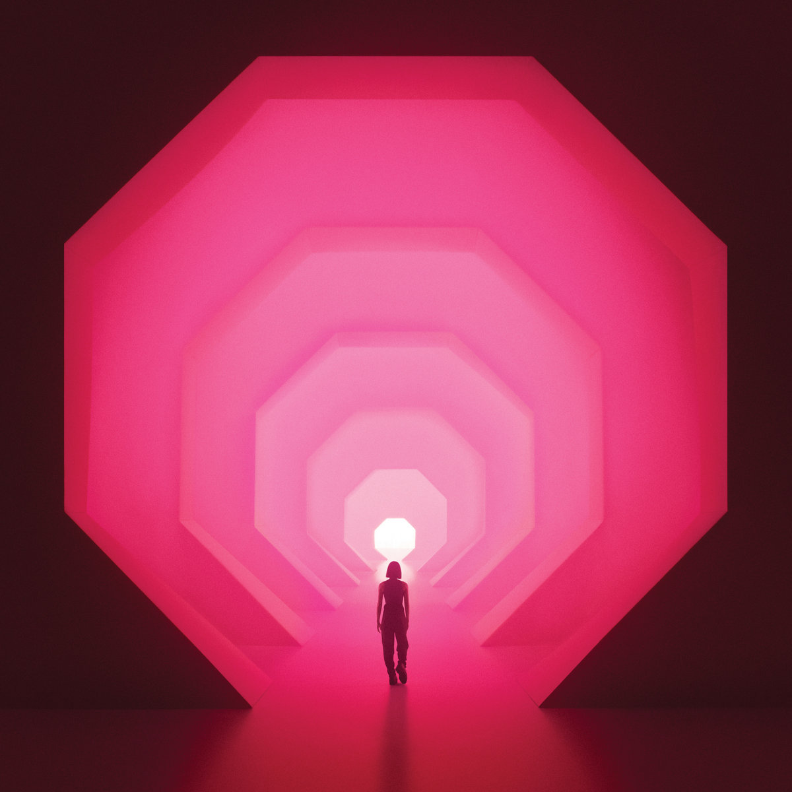

01

Art Direction
Visual Design
Motion Design
Interaction Design
‘Amnioverse’ album is an exploration of “self-created universe” through an amniotic-sac. The article builds upon this perspective of an amniotic-sac traveling through the universe and stumbling upon different interactive features against the backdrop of vast emptiness.
The spatial sound indicated our smallness and vulnerability yet it is met with whispered vocals and articulated melodies to provide comfort and intimacy to indicate that we are not alone. The contrast between fear of loneliness and collective realisation is used to guide the experience of the article. An immersive universe is provided for the audience to experience the discomfort of loneliness.
The user is able to engage with whispered voices, play with modular synth to replicate Lapalux’s sound, or even to enter different spaces. Consequently, the user is able to have an immersive experience of the album by the end of the article and find peace in the collective consciousness.
The 12-column grid was utilised – same grid as Discontent publication – to maintain consistency and give flexibility for the changing alignment of each interview questions. Each block of texts are designed to look like they are floating in a universe, thus are aligned to different columns of the grid. This provides variations within the controlled system of the grid that gives structure and balance to the varied content.
In addition, the grid also helps structure the interview format. Each pair of question and answer follows the same composition. There is a column gap between each speaker so the reader can easily distinguish different kinds of content.
Designed digitalised modular synth inspired by “universe” art direction. They seem to be floating in space but also follows a clear grid. The elements are also adapted to have a universe theme, looking like stars and the milky way.
User could engage with the syth by hold their click and turn the knob to learn Lapalux’s process. The syth could be overwhelming for those who has not seen one before and would be too irrelavent if they could just play with all the buttons. Thus, the user is guided to recreate one of Lapalux’s tracks by following the flashing red circle.
Original 3D album assets are done by Maurice Andresen
Stroked letters are filled in according to the lyrics when the reader hovers the animated album assets (created by Maurice Andresen). This feature appears right after the interview question about spoken words in Lapalux’s tracks. Without leaving the page, the user is able to immerse themselves visually and aurally into Lapalux’s musical element. This further adds more meaning and understanding of the interview.
The “waiting room” increases its opacity as the user scrolls down until they are fully immersed in the full screen room. The image is taken from a James Turrell’s installation who is Lapalux’s main inspiration behind the album. In his answer to the previous interview question, he offered an insight about the installation image he would look at for everyday. He said “people are sitting in what looks like a waiting room lit in a purple hue, looking up at the dark night sky through a hole in the ceiling... it seems like we are all in that waiting room, waiting to be somewhere or go somewhere.”
The feature offers the same waiting room experience asking the reader to wait for a shooting star that appears on scroll interaction. The “waiting room” ends with the reader entering the installation into black hole and the user is taken back to the article again.
One of Lapalux’s unique sound characteristic is his use of binaural spacial spanning integrating in every track. The technique allows the listener to hear sound in a 3D environment like you are in an actual place. This immersive feature is for the reader to actually interact with and experience Lapalux’s reply to an interview question directly before the room appeared. The user can click to change the X position and hear the same melodies but from different spatial sound within the room. The reader can scroll down further to exit the room back to the article.